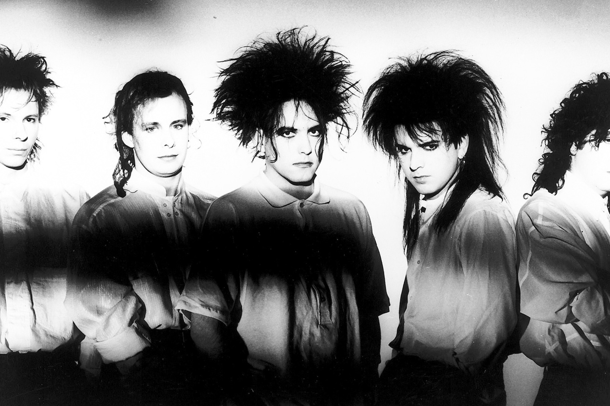

MY FAVORITE BAND
The Cure
About the Cure
The Cure are an English rock band formed in Crawley, West Sussex, in 1978. The band members have changed several times, with guitarist, lead vocalist and songwriter Robert Smith the only constant member. The band's debut album was Three Imaginary Boys (1979) and this, along with several early singles, placed the band in the post-punk and new wave movements that had sprung up in the wake of the punk rock revolution in the United Kingdom. Beginning with their second album, Seventeen Seconds (1980), the band adopted a new, increasingly dark and tormented style, which, together with Smith's stage look, had a strong influence on the emerging genre of gothic rock as well as the subculture that eventually formed around the genre.
Albums by the Cure
- Three Imaginary Boys (1979)
- Seventeen Seconds (1980)
- Faith (1981)
- Pornography (1982)
- The Top (1984)
- The Head on the Door (1985)
- Kiss Me, Kiss Me, Kiss Me (1987)
- Disintegration (1989)
- Wish (1992)
- Wild Mood Swings (1996)
- Bloodflowers (2000)
- The Cure (2004)
- 4:13 Dream (2008)